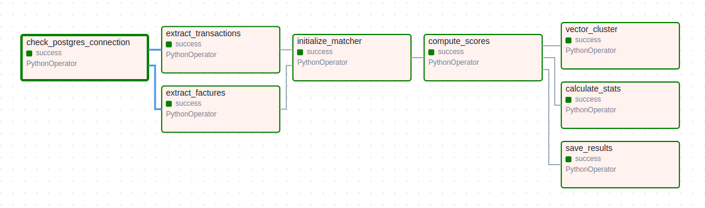
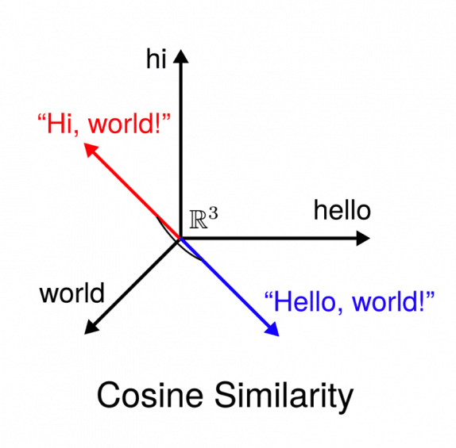

Chargement des factures, virements et retours RSP dans une structure relationnelle.
01 / Contexte
Automatiser le rapprochement de flux hétérogènes
Le projet répond à un besoin métier concret : fiabiliser le suivi comptable en limitant les traitements manuels.
Le projet repose sur un besoin concret : rapprocher automatiquement des factures émises, des virements bancaires et des retours RSP dans un environnement où les données sont hétérogènes, parfois incomplètes, et souvent difficiles à comparer directement.
L’enjeu était d’obtenir un système fiable, maintenable et reproductible, capable de limiter les tâches manuelles et de produire des résultats directement exploitables pour le suivi comptable.
02 / Méthodes
Démarche technique
Une logique hybride : préparer la donnée, calculer des similarités, intégrer des règles métier et automatiser.
01
Modéliser
Structuration des entités métiers dans PostgreSQL via SQLModel.
02
Nettoyer
Normalisation des libellés bancaires, des caractères, des montants et des dates.
03
Comparer
Utilisation de similarité cosinus, TF-IDF et distance métier personnalisée.
04
Automatiser
Construction d’un DAG Airflow composé de huit tâches reproductibles.
03 / Pipeline
Un traitement automatisé de bout en bout
Le pipeline Paymatch organise les traitements en étapes reproductibles, de la donnée brute jusqu’au score de rapprochement.
Standardisation des formats, libellés, dates, montants et caractères spéciaux.
Comparaison textuelle et métier pour identifier les correspondances probables.
Classement des rapprochements selon un niveau de confiance exploitable.
04 / Visuels
Architecture et logique de matching
Ces visuels rendent le projet plus lisible en montrant à la fois l’organisation du pipeline et le principe de comparaison.

Lecture 01
Organisation générale du pipeline
Ce visuel permet de comprendre comment les sources sont intégrées, préparées puis rapprochées. Il montre la logique globale du projet : transformer des flux hétérogènes en résultats exploitables.
01

Lecture 02
Comparer des libellés proches
La similarité cosinus permet de comparer des textes qui ne sont pas strictement identiques, mais qui partagent des signaux communs. Elle est utile pour rapprocher des écritures bancaires imprécises.
02
Source brute → Normalisation
Libellés vectorisés → Similarité textuelle
Règles métier → Score de confiance
Résultat final → Correspondance proposée
Lecture 03
Une décision progressive
Le rapprochement n’est pas basé sur une seule règle. Il combine plusieurs indices : texte, montants, dates, logique métier et score final pour proposer une correspondance fiable.
03
05 / Résultats
Ce que le projet met en avant
Le projet montre une capacité à passer d’un besoin métier réel à une solution technique structurée.
Une chaîne de traitement découpée en étapes lisibles, automatisables et maintenables.
Une approche hybride qui combine similarité textuelle et règles adaptées au contexte.
Une première évaluation des regroupements de libellés proches par K-Means.
06 / Limites & recul
Ce que l’analyse doit encore améliorer
Le projet pose une base solide, mais le matching financier nécessite toujours des contrôles et des seuils prudents.
Qualité des données
Les performances dépendent fortement de la propreté des libellés, des montants et des dates disponibles.
Seuils de confiance
Le score doit être interprété avec prudence afin d’éviter les rapprochements automatiques trop risqués.
Validation métier
Certaines correspondances nécessitent encore une supervision humaine, surtout dans les cas ambigus.
07 / Bilan du projet
Ce projet met en évidence ma capacité à concevoir un traitement structuré de bout en bout : modélisation des données, nettoyage, appariement, automatisation et restitution de résultats dans un cadre métier concret.
L’automatisation via Airflow et Docker renforce la reproductibilité du processus, tandis que le moteur de matching et le clustering ouvrent la voie à des usages plus avancés, comme l’alerte ou la supervision de flux.
Compétences mobilisées
- Conception de pipeline de traitement de données
- Nettoyage et normalisation de données textuelles
- Automatisation avec Apache Airflow
- Matching hybride entre similarité textuelle et logique métier
- Structuration de données avec PostgreSQL et SQLModel